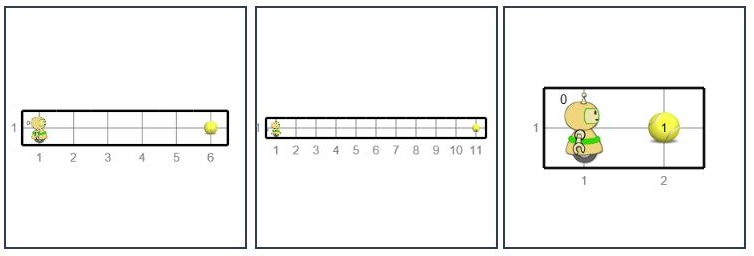

Rešite više zadataka odjednom¶
Sudeći prema programima koje smo do sada videli, moglo bi se pomisliti da za svaki, makar malo drugačiji zadatak, treba pisati poseban program. Kada bi to bilo tako, programiranje bi bilo vrlo, vrlo zamoran posao.
Da bi program koji napišemo mogao da se primeni na grupu sličnih zadataka, potrebno nam je da se u različitim situacijama izvršavaju različite naredbe. To znači da nam je potreban način da program sazna trenutnu situaciju i da bira koje će naredbe izvršiti u zavisnosti od stuacije. Situacija se može odnositi na broj loptica koje se nalaze na nekom polju ili kod Karela, na položaj zidova oko Karela i slično. Program koji bi mogao da dobija odgovore na pitanja o Karelu i njegovoj okolini, mogao bi i da rešava više sličnih zadataka, odnosno jedan opštiji zadatak.
Pitanja o Karelu¶
Na početku uvodnog poglavlja smo videli komande Karelu, pomoću kojih mu zadajemo da izvršava neke radnje (ide napred, okreće se nalevo i nadesno, uzima i ostavlja loptice). Tada smo pomenuli da postoji još pet funkcija u vezi sa Karelom. Ovih pet funkcija su drukčije od prethodnih po tome što pomoću njih postavljamo neka pitanja o Karelu ili o polju na kome se on nalazi i dobijamo odgovor. Evo tih funkcija:
moze_napred()- pitamo da li Karel može da ide napred (nije pred zidom). Dobijamo odovor „da” ili „ne”.broj_loptica_na_polju()- pitamo koliko ima loptica na polju ispod Karela. Dobijamo broj loptica na polju.ima_loptica_na_polju()- pitamo da li na polju ispod Karela ima loptica. Dobijamo odovor „da” ili „ne”.broj_loptica_kod_sebe()- pitamo koliko loptica Karel trenutno ima kod sebe. Dobijamo broj loptica kod Karela.ima_loptica_kod_sebe()- pitamo da li Karel ima loptica kod sebe. Dobijamo odovor „da” ili „ne”.
Funkcije koje daju odgovor ne možemo da pišemo kao zasebne naredbe, kao što smo to do sada radili. Umesto toga, ove funkcije pišemo kao deo neke naredbe jezika Pajton.
Sve dok je potrebno (naredba while)¶
Jedan način da upotrebimo funkcije koje daju odgovor je da ih pišemo u naredbi while. Naredba while postoji u skoro svim programskim jezicima i njeno pisanje u raznim jezicima je vrlo slično. Na Pajtonu to izgleda ovako:
Smisao while naredbe je: dok god je ispunjen uslov, izvršavaj naredbu ili naredbe koje su napisane ispod uvučeno (while na engleskom znači „dok” ili „dok je”). Ovde je sa uslov označeno bilo šta što je ispravno napisano na Pajtonu, a svodi sa na da ili ne (to „bilo šta” se u programiranju naziva logički izraz).
Pravila pisanja while naredbe nalažu da se nakon uslova obavezno navede dvotačka (znak :). Naredbe koje se ponavljaju dok je taj uslov ispunjen (dok je odgovor na pitanje u uslovu da, odnosno tačno) čine telo while naredbe i pišu se u narednim redovima malo desno (uvučeno) u odnosu na while naredbu. To znači da se ispred svake od naredbi koje se ponavljaju dodaje se isti broj razmaka.
Uslov se proverava pre svakog izvršavanja naredbi u telu while naredbe. Prvi put kada uslov ne bude ispunjen, kompletna naredba while (zajedno sa naredbama u svom telu) se završava i prelazi se na naredbu koja je navedena ispod tela while naredbe. Na primer, ako izvršimo:
Karel će se pomerati napred dok god može, to jest dok na pitanje moze_napred() ne dobijemo odgovor „ne”, što znači da je Karel naišao na zid. Kad završi sa pomeranjem, Karel će uzeti lopticu. U slučaju da je Karel već pred zidom, naredba napred() se neće izvršiti ni jednom i Karel će odmah uzeti lopticu.
U primerima i zadacima koji slede zadatak će biti uopšten. To znači da će pri različitim pokretanjima programa zadatak izgledati slično, ali malo drugačije. Program treba napisati tako da rešava svaki od tih sličnih zadataka.
Idi do kraja i pokupi lopticu¶

Ispred Karela je jedno ili više polja, a na poslednjem polju je jedna loptica. Napišite program na osnovu kojega će Karel pokupiti lopticu sa poslednjeg polja.
Program treba pokrenuti više puta, jer će pri različitim pokretanjima Karelov svet imati različit broj polja. Evo nekih primera kako zadatak može da izgleda:
{kind=link}
Koristićemo while naredbu za kretanje Karela i na kraju mu reći da pokupi lopticu.
(Karel_while__many_squares_and_ball_at_the_end)
Može se dogoditi da neki program često daje dobar rezultat, a povremeno daje loš rezultat ili načini grešku pri izvršavanju. Takav program treba smatrati neispravnim. Ispravan program treba uvek da daje ispravan rezultat.
Zadaci za vežbu¶
Idi jedno polje napred i pokupi sve loptice¶
Ispred Karela je tačno jedno polje, a na njemu bilo koji broj loptica. Karel treba sve da ih pokupi.
Prateći ovako napisan program, Karel će pokušati da zauvek ponavlja naredbu uzmi(), jer je uslov u while naredbi uvek ispunjen (True znači „Tačno”). Međutim, kada Karel uzme sve loptice sa tog polja, dobićemo poruku o grešci, jer smo tražili da se uzme loptica sa praznog polja (slobodno isprobajte ovo i vidite kako izgleda poruka o grešci). Pokušajte da popravite program, tako da Karel uzima loptice samo dok ih ima.
(Karel_while__one_square_many_balls)
Idi do kraja i pokupi po jednu lopticu¶
Ispred Karela je jedno ili više polja, a na svakom polju je po jedna loptica. Napišite program na osnovu kojega će Karel pokupiti loptice sa svih polja.
I ovaj program treba pokrenuti više puta da bismo se uverili da on rešava zadatak bez obzira na dužinu staze kojom ide Karel.
Treba koristiti jednu while naredbu za kretanje Karela i uzimanje loptica.
(Karel_while__many_squares_and_ball_at_each)
Premesti sve loptice sa poslednjeg na prvo polje¶
Ispred Karela je jedno ili više polja, a na poslednjem polju je nekoliko loptica. Karel treba da uzme sve loptice sa poslednjeg polja i ostavi ih na prvo polje.
(Zadatak treba testirati više puta).
U ovom zadatku su potrebne četiri petlje jedna za drugom (ne jedna u drugoj):
Prvom petljom Karel stiže do poslednjeg polja
Drugom petljom Karel uzima loptice
Trećom petljom Karel se vraća na polazno polje
Četvrtom petljom Karel ostavlja sve loptice koje ima kod sebe
Naravno, posle prve ili druge petlje, Karel treba da se okrene ka početnom polju (dva puta nalevo ili dva puta nadesno).
(Karel_while__bring_balls_to_front_square)
Prebaci loptice u gornji red¶
Karelov svet se ovaj put sastoji od dva reda iste, ali nepoznate dužine. Karel je u donjem levom uglu, okrenut ka istoku. Sva polja gornjeg reda su prazna, a na svakom polju prvog reda se nalazi po jedna loptica, uključujući i polje na kome je Karel. Karelov zadatak je da rasporedi po jednu lopticu na svako polje gornjeg reda.
(Zadatak treba testirati više puta).
(Karel_while__put_balls_in_upper_row)
Dajemo uputstvo koje nalikuje programu: